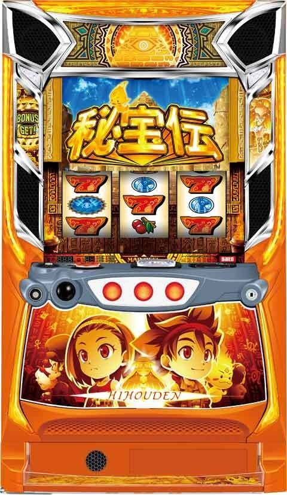
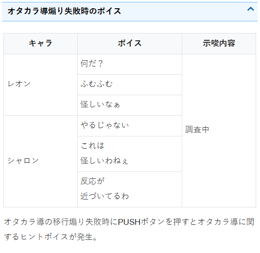
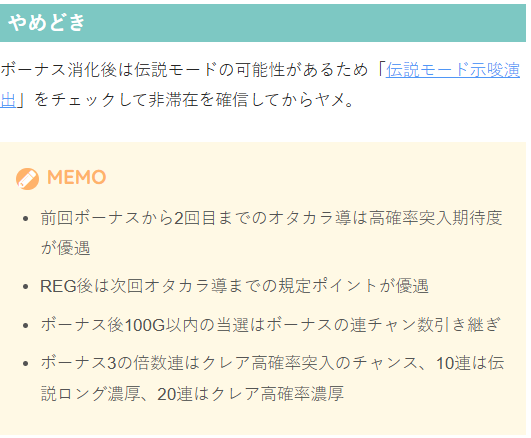
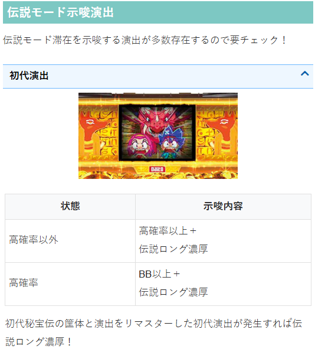
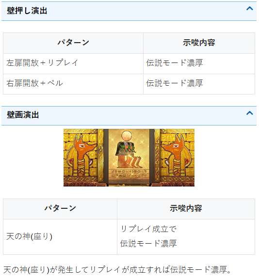
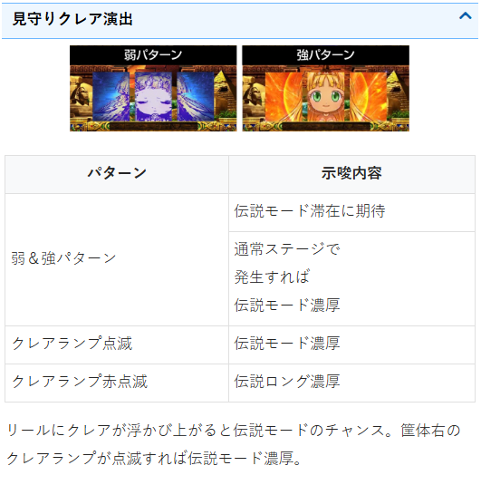
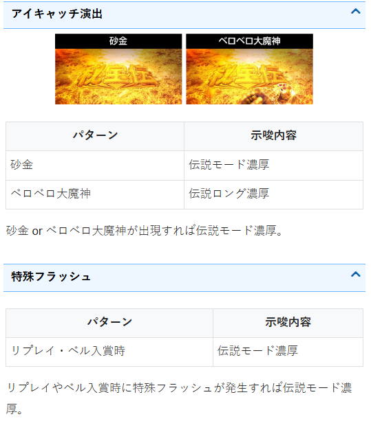

秘宝伝 🆕


狙い目
天井・リセット狙い
| 条件 | 狙い目 |
|---|---|
| リセット後 | 300G～ |
| BIG後 | 620G～ |
| REG後 | 470G～ |
ポイント・オタカラ導狙い
| 示唆・条件 | 対応 |
|---|---|
| シャロン「反応が近づいてるわ」 | オタカラ導に入るまで続行 |
| オタカラ導滞在中（緑エフェクト発生） | 高確率ゾーン突入チャンス（期待度約30％） |

示唆関連の押し引き
不明
有利区間関連狙い
不明
やめ時
| 条件 | 対応 |
|---|---|
| ボーナス消化後 | 伝説モード示唆をチェック |
| 8～9連以上到達後 | 100Gくらいまで様子見 |
| それ以外 | 伝説モード非滞在確認後やめ（30G目安） |
| 高確率失敗後 | 20-30Gは示唆チェック |
伝説モード示唆演出の詳細は「ちょんぼりすた」を参照。

その他
伝説モード示唆




参考元
基本情報
- メーカー: パオン・ディーピー
- 機械割: 97.8% 〜 114.7%
- 導入開始日: 2025年12月22日（月）
- ゲーム性概要: ●通常時はおもにチャンス目で高確率を当ててボーナスを目指すという伝統のゲーム性 ●もちろん高確率当選率がアップする伝説モードも搭載！ ●ボーナスとのループ率約80%を誇る「STロング（ストロング）高確率」にも注目


打ち方
打ち方・小役
打ち方（小役狙い）
［最初に狙う絵柄］ 左リール上段付近にBARを目押し。 チェリーは代用があるため、スイカさえこぼさなければどこを狙っても問題ないが、成立役をわかりやすくするためにBAR狙いを推奨したい。
［スイカ停止時］ スイカがスベってきたら中リールにスイカを目押し（赤7orピラミッド目安）。右リールは取りこぼしがないのでフリー打ちでOKだ。
［レア役の停止例］
変則押しについて
基本的に左1stでの消化を推奨。高確率のみ変則押しもOKだ（高確率準備中はNG）。
解析情報通常時
小役関連
チャンス目合算確率
| 状態 | 確率 |
|---|---|
| 通常時 | 1/124.1 |
| 高確率中 | 1/15.5 |
チャンス目成立時の約50%で高確率へ突入。高確率中のチャンス目はボーナス濃厚だ。
［設定差なし］通常時のレア役確率
| 役 | 確率 |
|---|---|
| スイカ | 1/82.1 |
| チャンス目 | 1/128.0 |
| 強チャンス目 | 1/4096.0 |
［設定差あり］通常時のチェリー確率
チェリー確率は高設定ほど優遇される。
高確率中のレア役確率
| 役 | 確率 |
|---|---|
| チェリー | 1/23.5 |
| スイカ | 1/24.7 |
| チャンス目 | 1/26.4 |
| マル秘チャンス目 | 1/39.1 |
| 強チャンス目 | 1/936.2 |
高確率の小役確率は全設定共通だ。
通常時・リプレイ契機の高確率（謎高確率）当選確率
通常時のリプレイで高確率を抽選していて、当選率は高設定ほど優遇される。
高確率抽選
高確率当選時のBB高確率振り分け
| 設定 | 振り分け |
|---|---|
| 1 | 3.6% |
| 2 | 4.0% |
| 3 | 4.5% |
| 4 | 5.3% |
| 5 | 6.4% |
| 6 | 7.2% |
［強チャンス目］高確率・ボーナス当選率（設定1）
※伝説モード中のBIGはクレア高確率含む
強チャンス目成立時はBB高確率orBIG当選濃厚。 高確率当選率は偶数設定、高確率当選時のBB高確率振り分けは高設定ほど優遇される。
オタカラ導
オタカラ導概要
通常時に規定ポイントを貯めると突入する前兆状態で、滞在中は上画像のように緑のエフェクトが発生。 移行時は高確率ゾーン突入のチャンスとなる。 突入契機のポイントは、基本的に1G消化につき1pt加算、レア役時は大量ポイント加算に期待できる。
前回のボーナスから2回目までのオタカラ導は高確率突入期待度がアップする。
オタカラ導 性能
| 突入契機 | 規定ポイント到達 （100 or 150 or 200 or 300pt） |
|---|---|
| 高確率当選期待度 | 約30% |
| 備考① | 前回のボーナスから2回目までのオタカラ導は 高確率突入期待度がアップ |
| 備考② | REG後は次回オタカラ導までの 規定ポイントが優遇 |
レア役時の獲得ポイント
| 役 | 抽選 |
|---|---|
| チェリー | 約50%で50pt以上獲得 |
| スイカ | 約25%で100pt以上獲得 |
※一気に規定ポイントまで到達する抽選もあり
［規定ポイントの設定タイミング］ 規定ポイントを抽選するタイミングはボーナス当選時とオタカラ導突入時。もちろんチャンス目経由の高確率ではポイントがリセットされないので、オタカラ導に当選していないかつ200G以上消化している状況なら、300G以内にオタカラ導に当選するためチャンスだ。
成立役ごとの獲得ポイント
| 獲得ポイント | チェリー | スイカ |
|---|---|---|
| 1pt | 50.0% | 75.0% |
| 50pt | 46.1% | 一 |
| 100pt | 1.9% | 21.9% |
| MAX | 1.9% | 3.1% |
伝説モード
伝説モード概要
転落まで「毎ゲーム全役で高確率を抽選」する状態で、ボーナス終了後の一部で突入する可能性がある。ショートとロングの2種類があり、転落率が変化。伝説ロング滞在時はBIG比率が約80%と高いところもポイントだ。 基本的に見た目は通常時と同じなので、伝説モードに滞在しているかどうかを完璧に見抜くのは難しいが、様々な示唆演出が存在している。
伝説モード 性能
| 突入契機 | ボーナス当選時の一部 |
|---|---|
| 種類 | ショート、ロングの2種類 |
| 毎ゲーム高確率当選確率 | 1/12.8 |
| 滞在中の抽選 | 毎ゲーム全役で高確率を抽選 その他＜チェリー・スイカ＜チャンス目＜強チャンス目 |
| 備考① | 伝説ロングはBIG比率が約80% |
| 備考② | 伝説ロング時の期待枚数約1100枚 |
| 備考② | 伝説ショート中はボーナス当選ごとに 伝説ロングへの昇格を抽選 |
伝説モード移行率
| 契機 | 移行率 |
|---|---|
| BIG後 | 50%以上 |
| REG後 | 30%以上 |
伝説モード移行率
※3の倍数連目のダブルBIGはBB高確率中の強チャンス目から当選
基本的に偶数設定ほど伝説モード移行率が高い。
天井
データカウンターの注意点
［実際のゲーム数とデータカウンターのゲーム数の違い］ ホールのデータカウンターは1G（＝3枚）と判別して表示されるものが多いため、2枚掛けになる高確率中は3G消化でカウンターが2G分進むケースがある。 この仕組みによってデータカウンターのゲーム数と実際のゲーム数がズレる場合があるので注意しておきたい。
実際のゲーム数とズレるパターン例
高確率を2回スルーしている場合、 データカウンターでは90Gだが、実際は100Gを超えている
高確率を4回スルーしている場合、 データカウンターでは780Gだが、799Gの天井に到達している
フリーズ
ロングフリーズ
砂嵐画面から様々な画面が表示されるロングフリーズ。発生した時点でダブルBIG5個と伝説STロング（ストロング）濃厚だ。
ロングフリーズ 性能
| 当選契機 | リプレイ成立時の一部!? |
|---|---|
| 恩恵 | ダブルBIG5個＋伝説STロング（ストロング） |
解析情報ボーナス時
高確率
高確率概要
おもにチャンス目契機で突入するボーナスの高確率状態。消化中はボーナス抽選がおこなわれ、チャンス目を引けばボーナス濃厚となる。通常の高確率以外にもBB高確率、無限高確率が存在する。
高確率 性能
| 突入契機 | チャンス目の約50%、オタカラ導経由、 ボーナス中の抽選（BET高確率）など |
|---|---|
| 継続ゲーム数 | 11G |
| ボーナス期待度 | 約60% |
| 滞在中のチャンス目確率 | 1/15.5 |
| 滞在中の抽選 | チャンス目を引けばボーナス濃厚、 弱レア役で無限高確率移行抽選 |
高確率の種類
| 高確率 | デフォルトの高確率 |
|---|---|
| BB高確率 | 成功すればBIG濃厚 （期待度は高確率と同じく約60%） |
| 無限高確率 | ボーナス濃厚 |
［BB高確率］
［無限高確率］
クレア高確率概要
ボーナスに当選すれば「STロング高確率」に突入する特殊な高確率。通常の高確率と異なり、アヌビスボーナス後に突入する。 期待度は通常の高確率と同じく約60%だが、成功時の恩恵が桁違いに大きいため何としてもボーナスを引きたいところだ。
クレア高確率 性能
| 突入契機 | アヌビスボーナス後、エンディング後 |
|---|---|
| 継続ゲーム数 | 11G |
| ボーナス期待度 | 約60% |
| 滞在中のチャンス目確率 | 1/15.5 |
| 滞在中の抽選 | ボーナス当選で STロング（ストロング）高確率へ |
伝説STロング（ストロング）高確率概要
BIG（ダブルライン）⇒高確率へ即突入という流れを約80%でループする本機最強の状態。終了しても伝説モードへ移行するため、さらなる出玉増加に期待できる。
伝説STロング（ストロング） 性能
| 突入契機 | クレア高確率中のボーナス当選 |
|---|---|
| 恩恵 | ボーナスはすべてダブルBIG（約300枚）、 BIG終了後はSTロング高確率に即突入 |
| ループ率 | 約80%（BIGと高確率のループ率） |
| 備考① | 終了しても伝説モードへ移行 |
| 備考② | 期待枚数約3000枚 |
高確率の仕組み
本機の高確率はリアルボーナス（いわゆるゼロボ）。高確率中を除き、基本的にほぼリアルボーナスが成立している状態で、高確率に当選＝リアルボーナスを揃えることができる準備状態（高確率待機中）へ移行。高確率待機中を経て、リアルボーナスを揃えると高確率がスタートする。 高確率待機中もATを抽選していて、チャンス目を引けば高確率成功＋BET高確率濃厚になる。
リアルボーナス（高確率）の構成
| 高確率待機中 | リアルボーナスを揃える前の準備中的な状態 |
|---|---|
| 高確率 | リアルボーナス中 |
| ボーナス待機中 | ボーナス当選後のリアルボーナス中 |
［リアルボーナス開始］ 逆押しピラミッドを狙え発生時にピラミッドを狙うと上記の出目が停止してリアルボーナス開始。ここでピラミッドが揃えばBIG＋BET高確率濃厚だ。
リアルボーナス
| 入賞出目 | 右下がりのベル・ピラミッド・ピラミッド |
|---|---|
| 終了条件 | 11枚払い出しで終了 |
| チャンス目確率 | 1/15.5 |
| 滞在中の抽選 | チャンス目を引けばボーナス濃厚、 スイカ・チェリーで無限高確率を抽選 |
リアルボーナスは11枚の払い出しで終了。毎ゲーム最低でも1枚の払い出しがあるため、高確率は最大で11G継続という仕組みだ。
［高確率中のチャンス目の種類］
［ボーナス当選前］チャンス目の役割
| 役（払い出し） | 役割 |
|---|---|
| 強チャンス目（4枚） | BIG濃厚 |
| チャンス目（4枚） | ボーナス濃厚 |
| マル秘チャンス目（1枚） | ボーナス濃厚 |
チャンス目は3種類あり、通常のチャンス目と強チャンス目の停止形は基本的に通常時と同じ。さらに、左1stだとハズレ目と判別できないマル秘チャンス目が存在する（変則押しで判別可能）。チャンス目比率はチャンス目：マル秘チャンス目＝6：4なので、ハズレ目でも期待できる仕様になっている。
［ボーナス待機中］ 高確率中にボーナス（AT）が当選した後も、リアルボーナスは終了するまでの間はチャンス目で高確率のストックを抽選（チャンス目確率はボーナス当選前と同じく1/15.5）。期待度はマル秘チャンス目＜チャンス目(約45%)＜強チャンス目の順で、チャンス目系2回目以降はストック期待度がアップする。
［ボーナス待機中 （ボーナス当選後） ］チャンス目の役割
| 役（払い出し） | 役割 |
|---|---|
| 強チャンス目（4枚） | 高確率ストックの期待大 |
| チャンス目（4枚） | 高確率ストック期待度約45% |
| マル秘チャンス目（1枚） | 高確率ストック抽選 |
チャンス目・強チャンス目の払い出しは4枚だが、マル秘チャンス目は1枚なので、早い段階でマル秘チャンス目を引けばボーナス待機中が長くなる。
［ボーナス非当選時の継続パターン］ ボーナス非当選で高確率が終了した場合、終了1G目にリアルボーナスが成立すれば 約1/2 で「狙え」が発生して高確率が再スタート（高確率継続）。 これは通常の高確率かつ1セット目のみ有効なため、高確率が3連続で継続することはない。
狙う位置ごとの大まかな特徴
| 最初に狙う絵柄 | 特徴 |
|---|---|
| 左1st：BAR狙い | チャンス目：第3停止まで期待感が継続 |
| 左1st：BAR狙い | マル秘チャンス目：第2停止で期待度変化 |
| 左1st：赤7狙い | チャンス目：1確目が停止 |
| 左1st：赤7狙い | マル秘チャンス目：判別不可 |
| 中1st：ピラミッド狙い | チャンス目：1確目が出やすい |
| 中1st：ピラミッド狙い | マル秘チャンス目：判別期待度激高 |
| 中1st：赤7狙い | チャンス目：1確目が出やすい |
| 中1st：赤7狙い | マル秘チャンス目：判別期待度高 |
| 中1st：BAR狙い | チャンス目：1確目が停止 |
| 中1st：BAR狙い | マル秘チャンス目：完全判別可能 |
狙う位置＆停止形によってハズレ目停止時のマル秘チャンス目期待度が変化。 中押しのBAR狙いなら完璧に見抜くこともできる。 もちろん通常の高確率中だけでなく、クレア高確率や伝説STロング高確率中も有効だ。 判別できなくても損をする要素ではないので、楽しみ方のひとつとして把握しておこう。
［左1st：BAR狙い］ 左のBAR下段停止後は中リールに赤7を目押ししよう。
左1st：BAR狙いの法則
| 停止形 | 法則 |
|---|---|
| ハズレ目A | ● マル秘チャンス目期待度：約80% ● ベル揃いでもマル秘チャンス目の可能性あり |
| ハズレ目B | ● マル秘チャンス目期待度：激低 ● 神の声発生時はマル秘チャンス目濃厚（初代モード除く） |
| ハズレ目C | ● マル秘チャンス目期待度：低 |
［左1st：赤7狙い］ 基本的にマル秘チャンス目は判別できないが、1確目を楽しめる。
［中1st：ピラミッド狙い］ スイカ中段停止時はレア役orチャンス目なので、レア役をフォロー。 スイカ上段停止時は右下がりの「リプ・ベル・リプ」以外ならマル秘チャンス目、リプ・ベル・リプでもマル秘チャンス目の可能性はある。
［中1st：赤7狙い］ 上段or下段に赤7が停止すればチャンス目濃厚。スイカ中段停止時はレア役orマル秘チャンス目なので、チェリーとスイカを狙おう。 スイカ上段停止時は右下がりの「リプ・ベル・リプ」以外ならマル秘チャンス目、ベル揃いやリプ・ベル・リプでもマル秘チャンス目の可能性は残っている。
［中1st：BAR狙い］ マル秘を含むすべてのチャンス目を完全判別できる手順。第1停止で1確or1殺になるため、気分に応じて使い分けるのもありだ。
待機中の特殊パターン
高確率待機中に20G消化しても「ピラミッドを狙え」が発生しなければ成功（ボーナス当選）＋BET高確率ストック濃厚。 PUSHボタンを押すとボイスで20Gまでの残りゲーム数を確認できるのだが、ボイス示唆はアバウトなので、正確にゲーム数を把握しておきたい場合はカウントすることをオススメだ。
［非伝説モード中］高確率当選時の前兆ゲーム数振り分け
| ゲーム数 | 振り分け |
|---|---|
| 0G | 9.8% |
| 1G | 1.2% |
| 2G | 4.7% |
| 3G | 3.9% |
| 4G | 0.4% |
| 5G | 0.4% |
| 6G | 0.4% |
| 7G | 0.4% |
| 8G | 3.1% |
| 9G | 0.4% |
| 10G | 3.1% |
| 11G | 2.3% |
| 12G | 0.4% |
| 13G | 0.4% |
| 14G | 0.4% |
| 15G | 0.4% |
| 16G | 7.8% |
| 17G | 1.2% |
| 18G | 23.4% |
| 19G | 28.5% |
| 20G | 2.0% |
| 21G | 1.6% |
| 22G | 1.6% |
| 23G | 2.3% |
※チャンス目成立ゲームが0G目、BB高確率やクレア高確率を除く
［伝説モード中］高確率当選時の前兆ゲーム数振り分け
| ゲーム数 | チャンス目以外契機 | チャンス目契機 |
|---|---|---|
| 0G | ー | 12.5% |
| 1G | 7.0% | 1.6% |
| 2G | 6.3% | 6.3% |
| 3G | 6.3% | 5.1% |
| 4G | 6.3% | 3.1% |
| 5G | 7.0% | 3.1% |
| 6G | 37.5% | 3.1% |
| 7G | 25.0% | 3.1% |
| 8G | 4.7% | 6.3% |
| 9G | ー | 0.4% |
| 10G | ー | 3.1% |
| 11G | ー | 2.3% |
| 12G | ー | 0.4% |
| 13G | ー | 0.4% |
| 14G | ー | 0.4% |
| 15G | ー | 0.4% |
| 16G | ー | 4.7% |
| 17G | ー | 0.8% |
| 18G | ー | 16.8% |
| 19G | ー | 20.7% |
| 20G | ー | 1.6% |
| 21G | ー | 0.8% |
| 22G | ー | 0.8% |
| 23G | ー | 2.3% |
※チャンス目成立ゲームが0G目、BB高確率やクレア高確率を除く
高確率当選時の前兆ゲーム数は最大23Gで、非伝説モード中は18・19Gの振り分けが多め。 伝説モード中も最大23Gだが、チャンス目以外で当選した場合は最大8Gになる。
ボーナス
BIG概要
赤7揃いのシングルラインなら約200枚、ダブルラインなら約300枚を獲得可能。 消化中はレア役でBET高確率を抽選する。
BIG 性能
| 獲得枚数 | シングルライン：約200枚、 ダブルライン：約300枚 |
|---|---|
| 消化中の抽選 | レア役でBET高確率を抽選 |
| 備考① | 消化中のアヌビスボーナス昇格あり |
| 備考② | 伝説モード中はダブルBIGのみ |
REG概要
約70枚獲得できるボーナスで、消化中に表示されるキャラ紹介で設定やアヌビスボーナス昇格などが示唆される。
REG 性能
| 獲得枚数 | 約70枚 |
|---|---|
| 消化中の抽選 | レア役でBET高確率を抽選 |
| 備考① | 消化中のアヌビスボーナス昇格あり |
| 備考② | キャラ紹介のパターンで 設定やアヌビスボーナス昇格を示唆 |
| 備考③ | チャンス目を2回引けば クレア高確率濃厚唆 |
［キャラ紹介］
［カードの組み合わせ］ カードの組み合わせにも注目。役の種類はボタンで確認することができる。
アヌビスボーナス概要
終了後にクレア高確率へ移行するボーナス。基本的にはBIGやREG中に昇格して移行する。 100G以内の連チャン回数によって移行率が異なり、3の倍数回目はチャンスとなる。
アヌビスボーナス 性能
| 移行契機 | ボーナス中の一部 |
|---|---|
| 特典 | 終了後にクレア高確率へ移行 |
| 備考 | 3の倍数の連チャン回数で突入しやすい |
［BIG中の昇格］ 基本的に煽りを経て昇格を告知。
［REG中の昇格］ アヌビスのキャラ紹介が出現すれば昇格濃厚。 ただし、BIG中のようにアヌビスボーナスという表記は出ず、終了後にクレア高確率へ突入する。
連チャン回数
ボーナスの連チャン回数は画面左下のベカンコで表示。ベカンコの色でボーナスの種類や、BET高確率やアヌビスボーナスに期待できる3の倍数回目がわかる親切設計だ。
ベカンコの色
| 色 | 対応しているボーナスや連チャン回数 |
|---|---|
| 黄 | REG |
| 赤 | BIG |
| 白 | 3の倍数の連チャン回数 |
連チャン回数のカウント条件
ボーナス後100G以内のボーナス当選回数
3の倍数回ごとのボーナス恩恵
| 種別 | 恩恵 |
|---|---|
| BIG | ダブルBIGかつ伝説モード移行濃厚 |
| REG | 伝説モード移行率アップ |
10連・20連時の恩恵
| 連チャン回数 | 恩恵 |
|---|---|
| 10連 | 伝説モードロング濃厚 |
| 20連 | クレア高確率濃厚 |
10連で伝説ロング、20連でクレア高確率濃厚。クレア高確率or伝説STロング突入で連チャン数はリセットされる。
ボーナス中のハズレ確率
高設定ほどハズレが多い。
演出情報
通常時
オタカラ導煽り失敗時のPUSHボイス
オタカラ導への移行煽りは必ず2G間続き、3G目に移行するかしないかへ分岐。 3G目に移行しなかった場合は第3停止後にPUSHボタンが点灯、ボタンを押すとボイスでオタカラ導に関するヒントが示唆される。
失敗時のPUSHボイス
| ボイス | 示唆 |
|---|---|
| シャロン「反応が近づいているわ！」 | 次回のオタカラ導まで 残100pt以下 |
| シャロン「やるじゃない！」 | 前兆開始時のレア役で 50pt以上獲得していた |
| レオン「怪しいな～」 | 次回オタカラ導当選時の 高確率期待度［小］ |
| シャロン「これは怪しいわね～！？」 | 次回オタカラ導当選時の 高確率期待度［中］ |
| クレア「ファ～イト！」 | 次回オタカラ導当選時の 高確率期待度［大］ |
連続演出のチャンスアップ
| 演出 | チャンスアップ |
|---|---|
| おばけ ルーレット | ● 兜付きおばけに発展すればチャンス ● ドクロルーレット発展で大チャンス ● レバーON時からのドクロルーレット発展もあり |
| 石板 ルーレット | ● シャッターの閉鎖時間が長いとチャンス |
| 脱出 | ● 発展タイミングが第2停止以降ならチャンス |
| トロッコ | ● 発展時のジェットエンジンはチャンス ● 「いくぜ!!」発生でチャンス、当該ゲームで小役非成立ならさらに期待度アップ、遅れパターン（リール回転開始時）の発生なら大チャンス ● 2G目のレールが繋がっていればチャンス |
| ドラゴン バトル | ● 演出が地震→岩→ドラゴンバトル以外ならチャンス ● 地震は揺れが大きいとチャンス ● 岩は岩が大きいとチャンス ● ドラゴンが炎を吐いていればチャンス ● チャンスアップ発生ゲームで小役非成立なら期待度アップ |
［おばけルーレット］
［石板ルーレット］
［脱出］
［トロッコ］
［ドラゴンバトル］
アイキャッチ
アイキャッチの示唆
夕日パターンなら次回ボーナスがBIG濃厚
夕日は次回ボーナスがBIG濃厚なので、機械割が100%を超える。
［デフォルト］
［夕日］
伝説モード
伝説モード示唆
【壁画演出：天の神（座り）】 天の神（座り）でリプレイ成立なら伝説モード濃厚だ。
壁画演出
| パターン | 法則 |
|---|---|
| 天の神（座り） | リプレイ成立で伝説モード濃厚 |
【インターフェイス変化】 月はリールの左側、否は右側に表示される。
インターフェイス変化
| パターン | 法則 |
|---|---|
| 満月 | 伝説モード濃厚 |
| 赤月 | 伝説モードロング濃厚 |
| 否 | 伝説モード濃厚 |
［満月］
［赤月］
［否］ 右側ピラミッドの部屋の中に注目！
【見守りクレア演出】 リールにクレアが浮かべば伝説モード滞在のチャンス。クレアランプ点灯時は伝説モード滞在濃厚だ。
見守りクレア演出
| パターン | 法則 |
|---|---|
| 弱＆強パターン | 伝説モード滞在に期待、 通常ステージ移行後に発生で伝説モード濃厚 |
| クレアランプ点滅 | 伝説モード濃厚 |
| クレアランプ赤点滅 | 伝説モードロング濃厚 |
見守りクレア出現確率（神秘ステージ中）
| パターン | 非伝説モード中 | 伝説モード中 |
|---|---|---|
| 弱 | 1/6.2 | 1/5.2 |
| 強 | 1/50.8 | 1/10.9 |
※神秘ステージ以外での発生は伝説モード濃厚
［弱パターン］
［強パターン］
［クレアランプ点滅］ 筐体右側にあるクレアランプにも注目だ。
【アイキャッチ演出】 アイキャッチにも伝説モード濃厚パターンがある。
アイキャッチ演出
| パターン | 法則 |
|---|---|
| 砂金 | 伝説モード濃厚 |
| ベロベロ大魔神 | 伝説モードロング濃厚 |
［砂金］
［ベロベロ大魔神］
【特殊フラッシュ】 リプレイやベル入賞時に通常とは異なる特殊フラッシュが発生すれば伝説モード滞在濃厚となる。
特殊フラッシュ
| パターン | 法則 |
|---|---|
| リプレイ・ベル入賞時 | 伝説モード濃厚 |
［壁押し演出］
壁押し演出
| パターン | 示唆 |
|---|---|
| 左の壁を開けてリプレイ | 伝説モード濃厚 |
| 右の壁を開けてベル | 伝説モード濃厚 |
［初代系演出］ 初代系の演出はシャッターも初代ver.に変化するため、初代未経験者でもわかりやすい。
初代系演出
| 発生タイミング | 示唆 |
|---|---|
| 通常時 | 高確率以上当選＋伝説モードロング濃厚 |
| 高確率中 | BIG以上当選＋伝説モードロング濃厚 |
濃厚パターンまとめ
伝説モードor高確率前兆示唆（現代モード限定）
伝説モード滞在濃厚+高確率以上当選濃厚
シャロンステージへ移行
伝説モード滞在濃厚
神秘ステージ中、非チャンス目時に前兆非経由で 連続演出へ発展(連続演出へ即発展)
神秘ステージ以外で見守りクレア演出が発生
高確率以上当選濃厚
チャンス目成立時に特殊な払い出し音が発生
インターフェイス変化のピラミッドアイ発生
シャロンの目演出発生
チャンス目成立ゲームの第3停止後にPUSHボタンを押して筐体上部の高確率ランプが光れば高確率当選濃厚というパターンもある。
ボーナス終了後のステージ
ボーナス終了後に階段（神秘ステージ）へ移行すればチャンスだ。
ボーナス終了後のステージ振り分け（神秘ステージ） REG後
| ステージ | 非伝説モード中 | 伝説ショート | 伝説ロング |
|---|---|---|---|
| 通路 | 100% | 90.0% | 70.0% |
| 階段 | 一 | 10.0% | 30.0% |
BIG後
| ステージ | 非伝説モード中 | 伝説ショート | 伝説ロング |
|---|---|---|---|
| 通路 | 91.0% | 65.0% | 50.0% |
| 階段 | 9.0% | 35.0% | 50.0% |
REG後に階段へ移行すれば伝説モードのショート以上濃厚、BIG・REG共通でロング時にも移行しやすい。
ボーナス後の階段ステージの示唆
BIG後なら伝説モード期待度アップ
BIG後の階段ステージが頻発すれば伝説モードロングに期待
REG後なら伝説モード濃厚（BET高確率経由時は除く）
高確率
高確率中の演出法則
［高確率準備中］
高確率準備中の演出法則
お宝発見演出以外の演出発生でチャンス目濃厚（STロング高確率除く）
ピラミッドを狙え演出発生率は約1/4 ※高確率終了後の次ゲームも同様なのでセット継続期待度は約1/8
［ミニキャラ通過系］
ミニキャラ通過系
| ミニミニメカレオン演出 | ● チェリー対応 ● チェリー否定でボーナス濃厚 |
|---|---|
| アグリー通過演出 | ● 小役揃いでボーナス濃厚（1枚役除く） ● 紫アグリーはボーナス濃厚 ● 黒アグリーならBIG濃厚 |
［ルーレット演出］
ルーレット演出
| パターン | 期待度 |
|---|---|
| トータル期待度 | 85%超 |
［神の声演出］
神の声演出
| パターン | 期待度 | |
|---|---|---|
| トータル | 約68% | |
| 左1stかつ BAR狙い時の出目 | BAR枠下停止 | ボーナス濃厚 |
| 左1stかつ BAR狙い時の出目 | BAR下段停止 | 約58% |
| チャンスなのか？⇒否！⇒熱すぎなのか？⇒そうだ！ | 約98% | |
| チャンスなのか？⇒そうだ！ | 約61% | |
| チャンスなのか？⇒そうだ！で左下段にBAR停止 | 約51% |
［ベカン子小役運搬演出］
ベカン子小役運搬演出（シングル小役告知）
| パターン | 期待度 | |
|---|---|---|
| シングル小役告知トータル | 約72% | |
| 告知役別 | ベル | 95.7% |
| 告知役別 | チェリー | 71.2% |
| 告知役別 | スイカ | 51.7% |
| 告知役別 | リプレイ | ボーナス濃厚 |
| 左1stBAR狙いの 停止形別 | ベル＋BAR下段停止 | 95.5% |
| 左1stBAR狙いの 停止形別 | チェリー＋チェリー下段停止 | 58.3% |
| 左1stBAR狙いの 停止形別 | スイカ＋スイカ上段停止 | 42.7% |
［デカ小役演出］
デカ小役演出
| パターン | 期待度 | |
|---|---|---|
| トータル | 約54% | |
| 告知役別 | ベル | 91.4% |
| 告知役別 | チェリー | 40.1% |
| 告知役別 | スイカ | 46.0% |
| 告知役別 | リプレイ | ボーナス濃厚 |
| 左1stBAR狙いの 停止形別 | ベル＋BAR下段停止 | 84.7% |
| 左1stBAR狙いの 停止形別 | チェリー＋チェリー下段停止 | 31.5% |
| 左1stBAR狙いの 停止形別 | スイカ＋スイカ上段停止 | 43.3% |
| 超ドデカ小役落下 | ボーナス濃厚 |
［クレアお祈り演出］
クレアお祈り演出
| パターン | 期待度 |
|---|---|
| 次ゲーム発展 | 約35% |
| 3G継続 | ボーナス濃厚 |
ボーナス
BIG中のBGM
BIG中は好きなBGMとそれに応じたムービーを楽しむことができる。
BIG中のBGM
| 曲名 | 使用されていた機種 |
|---|---|
| ミラクル・ハイウェイ | 秘宝伝～封じられた女神～ |
| ミラクル・ハイテンション | 秘宝伝～封じられた女神～ |
| 太陽のファファラオ | 秘宝伝～封じられた女神～ |
| 愛しきカタルシス | 秘宝伝～封じられた女神～ |
| フルスロットル！ | 秘宝伝～太陽を求める者達～ |
| キラ☆キラ | 秘宝伝～太陽を求める者達～ |
| IDentity | 秘宝伝～太陽を求める者達～ |
| 七色ナナリューション | 秘宝伝～伝説への道～ |
| ミラクル革命ション | 秘宝伝Rev. |
| ミラクルドライブ | 秘宝伝Rev. |
| オラオラサバイバー | 秘宝伝 解き放たれた女神 |
| ミラクル・ハッスル | 秘宝伝 解き放たれた女神 |
| キミ、メザメタマエ | 秘宝伝 解き放たれた女神 |
| 最高神 ～アメン・ラー～ | PYRAMID EYE |
| Crea | 秘宝伝～太陽を求める者達～ |
※Creaは伝説STロング中（STロングとボーナスのループ状態中）にのみ選択可能
PUSH画面の示唆
| 画面 | 示唆 |
|---|---|
| 潜入キッズ | デフォルト |
| トレジャーズ | オタカラ導が近いかも |
| ドラゴニックパーク | オタカラ導まで200pt以内濃厚 |
| VR秘宝伝 | 次回オタカラ導で高確率濃厚 |
| オバケバスターズ | 伝説モードロング示唆 |
| P.P | 伝説モードロング示唆［強］ |
| クルーズゴッコ | 次回無限高確率濃厚 |
| ダンディ・ジョーンズ | 伝説モードロング濃厚 |
| ベカン子との遭遇 | 設定変更濃厚 |
［潜入キッズ］
［トレジャーズ］
［ドラゴニックパーク］
［VR秘宝伝］
［オバケバスターズ］
［P.P］
［クルーズゴッコ］
［ダンディ・ジョーンズ］
［ベカン子との遭遇］
REG中のカード役
カードの組み合わせによって伝説モードなどが示唆される。
カード組み合わせ（役）ごとの示唆
| 組み合わせ | 示唆 |
|---|---|
| ワンペア | 伝説モード滞在に期待 |
| ツーペア | 伝説モード滞在期待度［強］ |
| スリーカード | 伝説モード滞在濃厚 |
| フラッシュ | オタカラ導まで200pt以内濃厚 |
| フルハウス | 伝説モード滞在＆次回無限高確率濃厚 |
| フォーカード | 伝説モードロング濃厚 |
| 役ナシ（ブタ） | 伝説モード滞在濃厚 |
特殊楽曲の示唆
| 楽曲 | 示唆 |
|---|---|
| メゾンド・ピラハイム | 次回無限高確率濃厚 |
| alone→along | 伝説モードロング濃厚 |
「メゾンド・ピラハイム」はコチラ
「alone→along」はコチラ
カスタム
初代モードへの変更
初代モード選択時はST（スト）ロング高確率を含め、すべての高確率が「通常の高確率と同じ見た目」に変化。クレア高確率などでプレッシャーを感じたくないプレイヤーにオススメだ。 高確率の種類を確認したい場合は、高確率開始画面でも通常モードへ切り替えることが可能だ（リール下部に表示）。
プレミアム演出
大都マシンのプレミアム
歴代大都マシンのプレミアが発生した場合は通常時・高確率中不問でBIG濃厚だ。
裏ボタン
高確率中の隠しモード
高確率開始ゲーム（右下がりベル/ピラ/ピラ入賞ゲーム）でPUSHボタンを長押しすると隠しモードの「ピラバレモード」or「一発告知モード」を選択できる。
隠しモード
| ピラバレモード | チャンス目時はレバーON～第3停止時までに ピラバレが発生 （ピラバレなし時の当選はBIG濃厚） |
|---|---|
| 一発告知モード | 演出発生頻度が低下して、 告知が全て「神の開眼演出」に変化 |
ピラバレモードのピラバレ発生割合 BIG当選時
| タイミング | マル秘チャンス目 | スベリチャンス目 | スベリなし チャンス目 |
|---|---|---|---|
| ウェイト中 | 一 | 54% | 4% |
| リール回転時 | 一 | 6% | 4% |
| 第1停止時 | 一 | 20% | 一 |
| 第3停止時 | 一 | 15% | 72% |
| 第3停止後 | 95% | 一 | 一 |
| 発生なし | 5% | 5% | 20% |
REG当選時
| タイミング | マル秘チャンス目 | スベリチャンス目 | スベリなし チャンス目 |
|---|---|---|---|
| ウェイト中 | 一 | 55% | 8% |
| リール回転時 | 一 | 10% | 8% |
| 第1停止時 | 一 | 25% | 一 |
| 第3停止時 | 一 | 10% | 84% |
| 第3停止後 | 100% | 一 | 一 |
| 発生なし | 一 | 一 | 一 |
※スベリチャンス目…左リールBAR狙い時にスイカまでスベるチャンス目 ※スベリなしチャンス目…左リールBAR狙い時にBAR下段停止から出るチャンス目
高確率中の成立役示唆
リール回転中にOKボタン（十字キーの真ん中）を押すと、筐体上部のミニランプの色で成立役を示唆。成立役が矛盾すればボーナス濃厚だ。